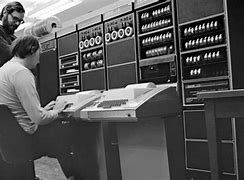

Primeira versão do android
A primeira tentativa de criar um mascote surgiu em 2007 e veio de um desenvolvedor chamado Dan Morrill. Ele conta que abriu o Inkscape (software livre para vetorização de imagens) e criou sua própria versão de robô. O objetivo era apenas personificar o sistema apenas para a a sua equipe, não existia nenhuma solicitação da empresa para a criação de um mascote.
Ler mais

O que é inteligência artificial?
A Inteligência Artificial, que você vai ver por aí sendo citada apenas como IA (ou AI, de artificial intelligence), é um avanço tecnológico que permite que sistemas simulem uma inteligência similar à humana — indo além da programação de ordens específicas para tomar decisões de forma autônoma, baseadas em padrões de enormes bancos de dados.
Leir mais

ARPANET: A HISTÓRIA DA REDE QUE MUDOU A INTERNET PARA SEMPRE.
Tudo começou em plena Guerra Fria, em 1957, quando a União Soviética lançou o Sputnik, o primeiro satélite artificial da história. O feito soviético deixou os Estados Unidos em alerta, temendo que o país estivesse ficando para trás na corrida espacial. Foi então que o presidente americano Dwight Eisenhower criou a ARPA (Advanced Research Projects Agency),
uma agência do Departamento de Defesa dos EUA, com o objetivo de desenvolver tecnologias avançadas para fins militares.
Ler mais